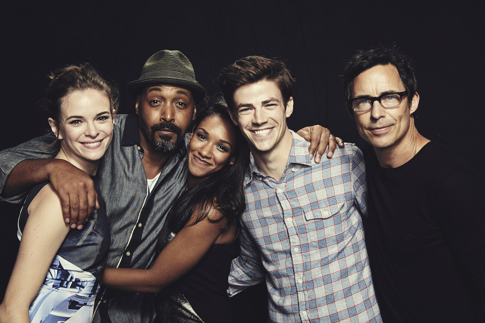

The Flash es una serie de televisión que trata sobre el personaje de DC Comics Flash. Es una serie spin-off de Arrow que se
estrenó en Estados Unidos el 7 de octubre de 2014, protagonizada por Grant Gustin como Barry Allen/Flash y escrita por Greg
Berlanti, Andrew Kreisberg y Geoff Johns. Se ha emitido seis temporadas completas.
En principio, el vigésimo episodio de la segunda temporada de Arrow sería como el piloto de la serie y en caso de que fuera
suficientemente popular, se aceptaría como nueva serie.[2] Sin embargo, después de que ejecutivos de The CW viesen los episodios
"The Scientist" y "Three Ghosts" (en los que aparece Barry en Arrow), aceptaron empezar la serie con su propio piloto
Barry Allen tenía tan solo once años cuando su madre falleció en un incidente bizarro y aterrador, momento en que su padre fue acusado injustamente de asesinato. Con su vida cambiada para siempre por la tragedia, Barry fue acogido y criado por el detective Joe West, padre de la mejor amiga de Barry, Iris. En la actualidad, Barry es un brillante investigador forense cuya determinación para descubrir la verdad acerca de la muerte de su madre le ha llevado a prestar atención a todo tipo de leyendas urbanas y avances científicos.
La obsesión más reciente de Barry es un acelerador de partículas creado por el físico visionario Harrison Wells y los miembros de su equipo de S.T.A.R. Labs, Caitlin Snow y Cisco Ramon, que afirman que el invento supondrá avances inimaginables en energía y en medicina. Sin embargo, algo va extremadamente mal durante la muestra pública y una explosión devastadora causa una peculiar tormenta en la que mueren muchas personas y Barry es alcanzado por un rayo.
Después de nueve meses en estado de coma, Barry despierta y descubre que su vida ha cambiado una vez más – el accidente le ha otorgado una habilidad de supervelocidad, permitiéndole desplazarse por Central City como un ángel guardián. A Barry le sorprende descubrir que no es el único "meta-humano" creado por la explosión del acelerador - y no todos están utilizando sus nuevos poderes para hacer el bien. En los meses posteriores al accidente, la ciudad ha tenido un aumento de personas desaparecidas, muertes inexplicables y otros fenómenos peculiares. Barry tiene un nuevo propósito - utilizar su velocidad para proteger a los inocentes, sin dejar de lado su objetivo de resolver el asesinato de su madre y limpiar el nombre de su padre. Al principio, solo amigos cercanos y asociados saben que Barry es el hombre más veloz del mundo, pero el mundo no tardará en descubrir en qué se ha convertido. Flash.
